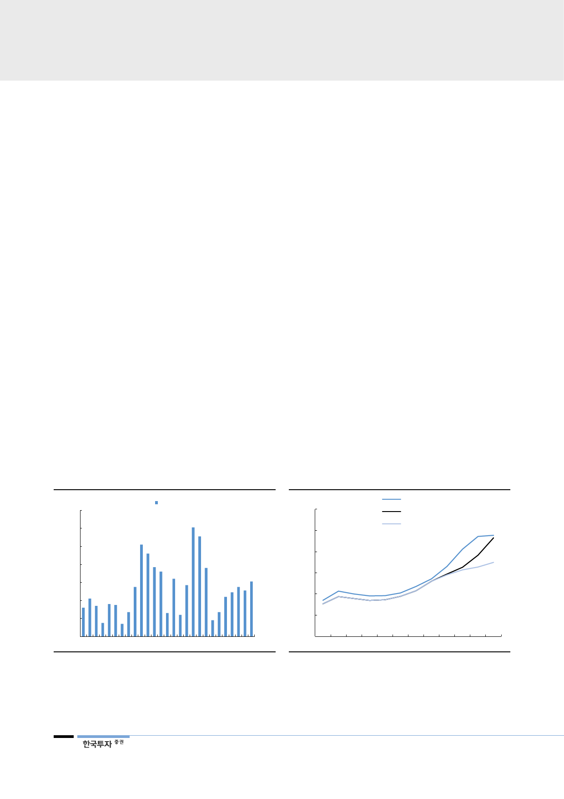

2020년까지 200여척의
LNG추진선이 인도될 전망
LNG는 SOx, NOx, CO2등 예상되는 모든 환경규제에 대응할 수 있는 가장 안전
한 방식이다. DNV GL에 따르면 2018년 건조 중인 LNG추진선은 51척, 2020년
105척, 2022년 122척에 이르며 2020년까지 200여척의 LNG추진선이 인도될
전망이다.
자체 개발한 시스템을 통해
경쟁사 대비 비용 절감 가능
FSRU: FSRU(Floating Storage Regasification Unit)는 육상터미널 대비
capex는 30%, 공기는 2년 이상 줄일 수 있어 동남아 신흥국 위주로 수요가 높
다. 현재 글로벌 FSRU는 34척이며 2022년까지 55척이 신규로 건조될 전망이
다. 현대중공업그룹은 FSRU 점유율 48%로 1위다. FSRU 기술의 핵심은 재기화
시스템으로 현대중공업은 ‘해수 글리콜 간접가열방식’(Hi-ReGAS)을 개발해 경
쟁사의 시스템 대비 capex는 30%, opex는 연 60만달러 절감이 가능하다.
현대미포조선과의 시너지
효과 기대
소형 LNG선(10~30K)과 벙커링: 소형 LNG선은 동남아나 섬 중심으로 수요가
늘어날 전망이다. 2017년 전세계에서 4척이 발주됐고 2022년까지 연평균 9척
이상씩 발주가 예상된다. 현대미포에게 적합한 선종으로 현대중공업의 LNG 기술
은 현대미포의 소형 LNG선과 벙커링 건조에 있어 시너지가 될 수 있다.
자체 개발한 시스템을 통해
경쟁사 대비 비용 절감 가능
[그림 18] LPG선 발주 척수
LPG선: LPG는 가스 생산과정에서 생산되는 부산물로 가스 생산이 늘며 동반 증
가해 LPG선 역시 발주가 늘어날 수밖에 없다. 셰일가스 생산이 급증하던 2014
년 글로벌 LPG선 발주는 111척에 육박했으나 2016~2017년은 각각 18척, 23
척 발주에 그쳤다. 공급을 소화한 뒤 올해부터 점차 발주가 회복세다. Clarksons
에 따르면 2018년부터 2022년까지 연간 40~60척의 발주가 예상된다. 현대중
공업그룹은 2013년 이후 총 92척의 LPG선을 수주해 15척을 수주한 2위와 격
차가 크다.
[그림 19] LNG 수요 공급 전망
(척)
140
120
100
80
60
40
20
LNG선 발주 척수
(백만톤)
450
400
350
300
250
200
LNG 생산능력
LNG 수요(2)
LNG 수요(1)
0
1996
2001
2006
자료: Clarksons, 한국투자증권
2011
2016 2021F
150
10 11 12 13 14 15 16 17 18 19 20 21
주: LNG 수요(1)은 BP 등 에너지기관들의 기존 전망치, (2)는 한국투자증권의 전망치
자료: BP, Bloomberg, 한국투자증권
12